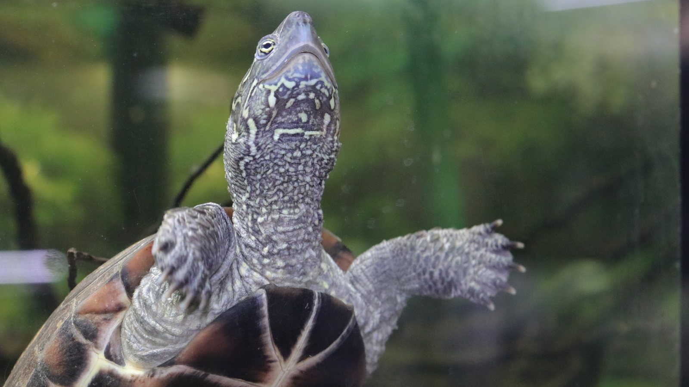
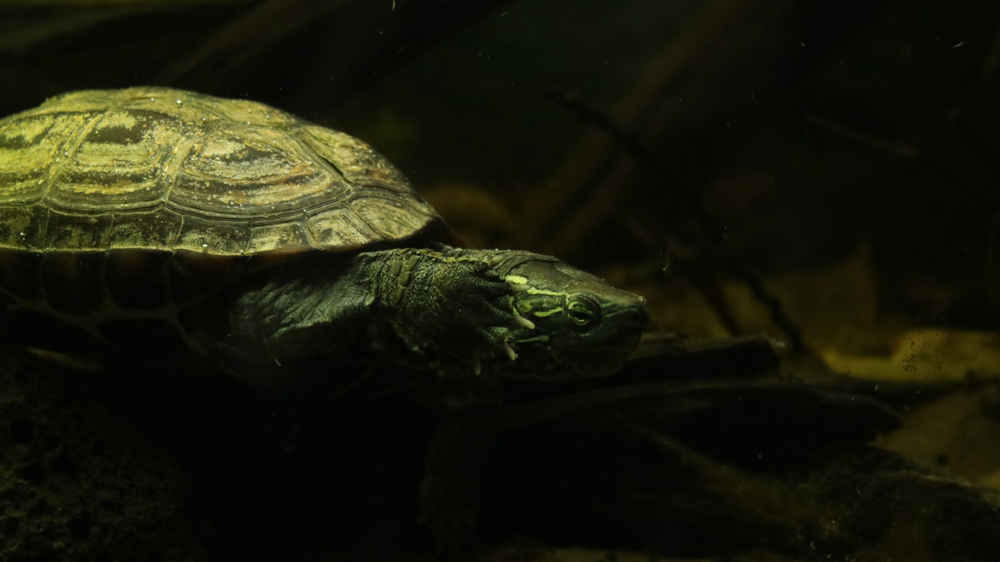
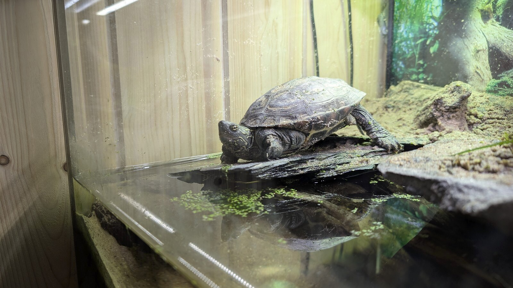

Reeves's turtle is a freshwater turtle from East Asia. It moves between water and a dry basking area, so swimming, thermoregulation, and access to ultraviolet light all shape daily life.
Species profile · Sonja
Mauremys reevesii
Meet Sonja
Sonja is the Reeves’s turtle currently in my care and the only vertebrate in the collection. Her portrait shows the striped head, expressive posture, and strong forelimbs that make her such a distinctive resident.

Scientific nameMauremys reevesii
FamilyGeoemydidae
Native rangeEast Asia
TaxonomyAccepted species
SexConfirmed female
In the wild
Natural history.
The three raised keels on the shell are especially noticeable in younger animals. Facial markings and shell texture make Sonja easy to recognise across her photographs.
Sonja's record centres on clean water, a fully accessible basking area, heat and UVB, varied feeding, and tracked growth. She is the collection's only vertebrate.
Taxonomy and range
Mauremys reevesii is a geoemydid freshwater turtle native to East Asia. Authoritative range summaries place native populations across temperate and subtropical China and the Korean Peninsula, with the status of populations elsewhere complicated by introductions and historical movement.
What the record can show
Sonja’s profile is intentionally separate from the invertebrate taxonomy used elsewhere on the site. Her section will develop around aquatic behaviour, habitat use, and verified keeper observations rather than forcing a turtle into a spider-oriented template.
In my care
Meet Sonja.
Sonja is the only vertebrate in the current collection. Her profile follows her as an individual—from the home shown in the accompanying video to the measurements and observations selected from her Codex record—while keeping turtle biology separate from the spider profiles.



From Instagram
Posts & reels.
From the channel
Related viewing.
Introvertebrates on YouTube
Sonja’s new home
A complete look at the home created for Sonja, the collection’s Reeves’s turtle.
Personal observations
From the Codex.
Introvertebrates Codex
Sonja · keeper record
A privacy-safe summary of this resident’s time in care, feeding outcomes, molts, and measurements. These are observations from the Introvertebrates collection, not species-wide averages.
Awaiting a privacy-reviewed Codex export. No invented statistics are shown.
Never published here: raw notes, record IDs, seller or breeder details, enclosure identifiers, local file paths, or exact private event dates.
Continue exploring
Related profiles.


Read further
Sources.
- The Reptile Database — Mauremys reevesiiView the source.
- U.S. Geological Survey — species profileView the source.